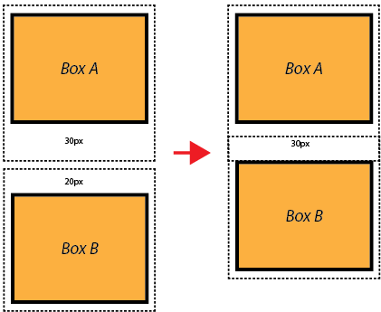

- Every element in HTML is represented as a rectangular box, which consists of four areas: content, padding, border, and margin. This is known as the CSS Box Model.
I'm div one.
I'm div two.
- now by default browser adds the margin and padding and to remove it we use the * selector
- box-sizing border box => if i write 100px for width, it will include padding and border in the width otherwise that 100px will be the content width therefore in the universal model we use box-sizing: border-box;
- box sizing: border-box; agr likh diya to total height or widht content + padding + border milake mani jayegi (no margin) agr esa nhi kiya to jb me height ya width likh raha hoon to wo content width hi hoga (not including padding and border)
- margin collapse : agr top margin 1 element ka 10px hai and another box ka bottom margin 20 px hai to dono box ke beech 30px ka distance ya margin hona chahiye but hota sirf 20px ka hi kyuki margin collapse hota hai
